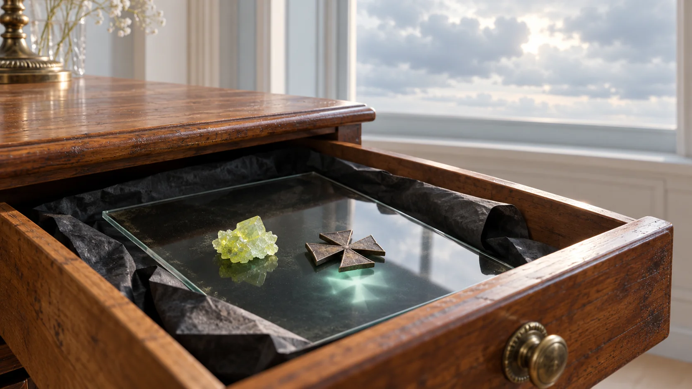
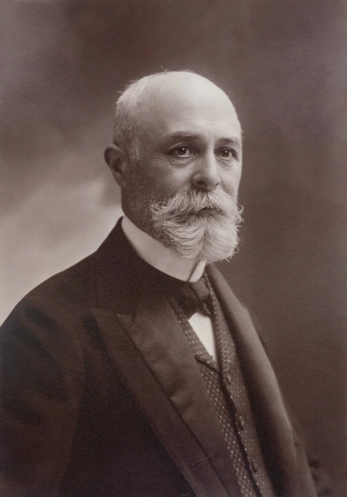
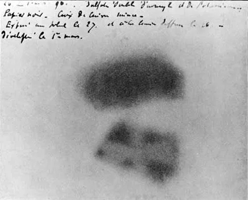
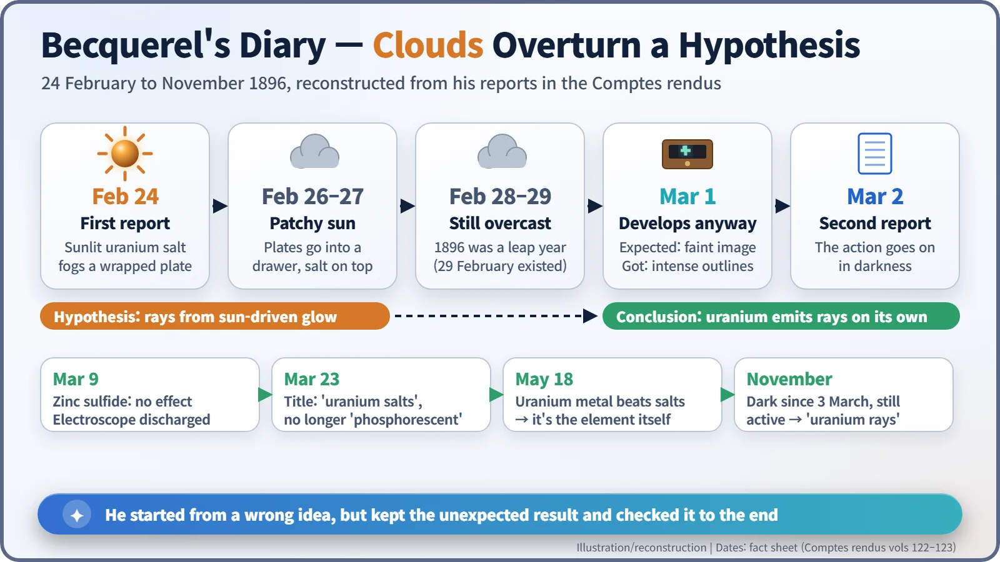
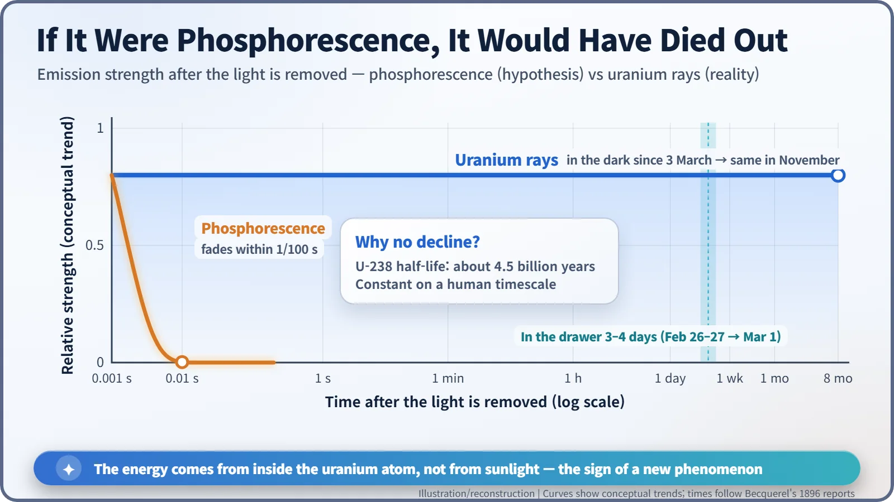

Nuclear History · 006
Saved by a Cloudy Week in Paris — Becquerel Discovers Uranium Rays (1896)
Becquerel set out to show that sunlit crystals emit X-ray-like rays; plates left in a dark drawer proved that uranium does it all by itself.

In February 1896 Henri Becquerel set out to prove that sunlit, glowing crystals give off X-ray-like rays, and the weather spoiled his plan. Plates left in a dark drawer came out strongly exposed anyway, showing that uranium emits penetrating radiation all by itself. That was the first glimpse of what Marie Curie would soon call radioactivity. [2]
A family business in glowing stones
What if the sky over Paris had stayed clear at the end of February 1896? The discovery of radioactivity might have slipped by weeks, perhaps months. A couple of days of fickle weather ruined an experiment, and in doing so opened a door into the world inside the atom. The man holding the photographic plates was Antoine Henri Becquerel (1852–1908).

Becquerel was the third generation of physicists in his family. His grandfather Antoine César and his father Edmond were both physicists, and Edmond was famous for studying phosphorescence and fluorescence: the way some materials soak up light and then give off light of their own. In 1892 Henri took over the physics chair at the National Museum of Natural History in Paris that his father and grandfather had held before him. [7]
On 20 January 1896, at a meeting of the French Academy of Sciences, the mathematician Henri Poincaré (1854–1912) presented Wilhelm Röntgen's newly discovered X-rays, then barely two months old. He added a guess. The X-rays seemed to come from the spot where the glass wall of the discharge tube glowed with fluorescence. Might any fluorescent material give off something similar? For Becquerel, sitting in the audience, this was a question with his family's name on it. [2]
24 February: a convincing first result
Becquerel chose a uranium compound he already had on hand, crystals of potassium uranyl sulfate. He wrapped a photographic plate in very thick black paper so that no light could reach it, set the crystals on top, and left the package in the sun for several hours. If sunlight made the crystals phosphoresce and, along with that glow, emit penetrating X-ray-like rays, those rays would pass through the paper and leave a mark on the plate.
When he developed the plate, the outline of the crystals appeared in black, just as he had hoped. Put a coin or a sheet of metal between crystals and plate, and its shadow showed up too. On 24 February he reported to the Academy that "the phosphorescent substance emits radiations able to traverse a paper which is opaque for light" (an English translation of his French). At that point he was sure that sunlight was driving it all. [2] [3]
What happened in the drawer
To get firmer evidence, Becquerel prepared several more plates with metal pieces in between. But on 26 and 27 February the sun kept ducking in and out of the clouds. He put the prepared plates, crystals still in place, into a dark drawer. The next few days stayed grey.
On 1 March he developed the plates anyway. By his own account, he expected only very faint images. In translation, his report reads: "Instead, the outlines appeared very intense. I concluded that the action had probably continued in the dark." The very next day, 2 March, he told the Academy. [2]


If it were phosphorescence, it should already have gone out
The phosphorescence of potassium uranyl sulfate fades in less than a hundredth of a second once the light is taken away. Yet crystals that had sat in a drawer for three or four days were still darkening the plate. Whatever energy was at work, it was not stored sunlight.
Becquerel checked, step by step:
- 9 March: zinc sulfide, a strongly phosphorescent material, left nothing on the plate, and the uranium radiation, like X-rays, made air conduct electricity and discharged a gold-leaf electroscope.
- 23 March: from this paper onward, the word "phosphorescent" disappears from his titles and "uranium salts" become the subject.
- 18 May: uranium metal, which does not phosphoresce, radiated more strongly than its salts. The source was neither light nor the particular compound, but the element uranium itself (though even then he still described it as something like an invisible phosphorescence).
- November: samples kept in the dark since 3 March were still emitting. He called the radiation "uranium rays" and admitted that he could not yet say where uranium got the energy it gave off for so long.
Today we know what those rays are: radiation released as uranium nuclei break down on their own. X-rays come from electrons and need an external power supply to be produced. Uranium rays come from the nucleus, all by themselves, mainly alpha particles plus beta and gamma rays from the daughter nuclides. And because uranium-238 has a half-life of about 4.5 billion years, there was no way its strength would drop noticeably over a few months. [2]

Was it really just luck?
The weather that postponed the experiment was certainly an accident. But nobody recorded why Becquerel bothered to develop plates he expected to be nearly blank. One reading is that he did it deliberately, as a control; another is that he was simply curious. What is clear is that he did not throw away a result that contradicted his expectation, and that he spent the following months changing materials and checking it to the end.
In fact, about forty years earlier, between 1857 and 1861, Abel Niépce de Saint-Victor had noticed that uranium salts darken photographic emulsions even in the dark, but he did not follow it through to its meaning. [7]
A quiet discovery with a long echo
The reaction at the time was lukewarm. Everyone was excited about X-rays, which could photograph bones, and the much weaker uranium rays were largely ignored. The person who picked this unfashionable subject for her doctoral thesis was Marie Curie. She measured the strength of the radiation precisely, found in April 1898 that thorium behaves the same way, and gave the phenomenon its name: radioactivity. The word was Curie's, not Becquerel's. [5]
In 1903 Becquerel received half of the Nobel Prize in Physics "in recognition of the extraordinary services he has rendered by his discovery of spontaneous radioactivity"; the other half went to Pierre and Marie Curie. [4] In 1975 the international (SI) unit of radioactivity was named after him: the becquerel (Bq). One becquerel means one nucleus decaying per second. [6] A drawer on a cloudy week ended up as the unit we use to measure radioactivity today.
Timeline
| Date | Event |
|---|---|
| 8 Nov 1895 | Röntgen discovers X-rays |
| 20 Jan 1896 | Poincaré presents X-rays at the Academy of Sciences |
| 24 Feb 1896 | Becquerel reports that sunlit uranium salts fog a wrapped plate |
| 1 Mar 1896 | Plates from the drawer developed; reported on 2 March |
| 18 May 1896 | Uranium metal shown to radiate more strongly than its salts |
| Apr 1898 | Marie Curie finds that thorium also emits rays |
| 10 Dec 1903 | Becquerel and the Curies awarded the Nobel Prize in Physics |